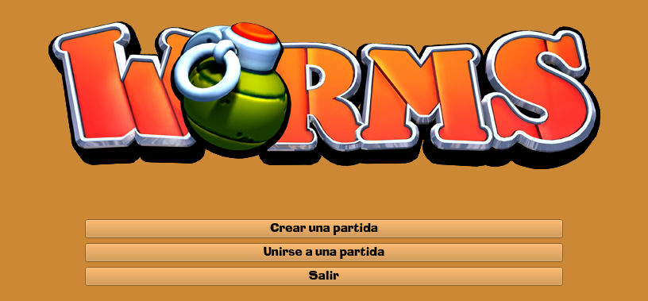
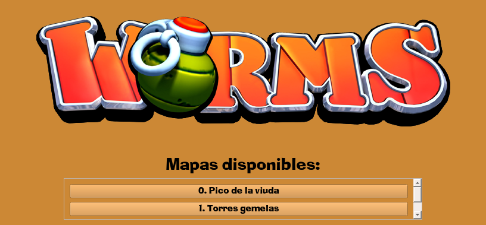
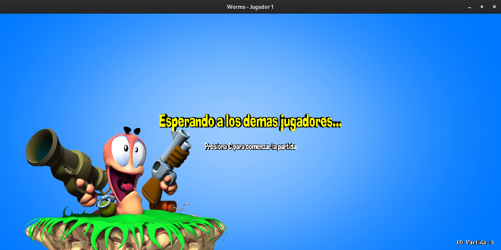
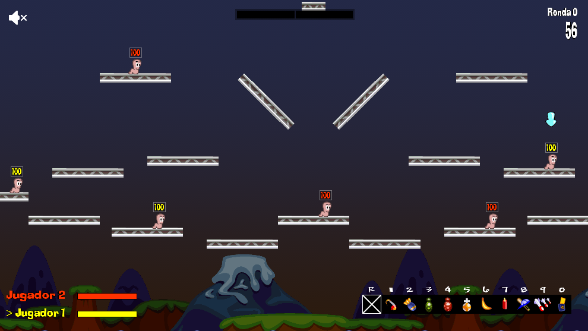
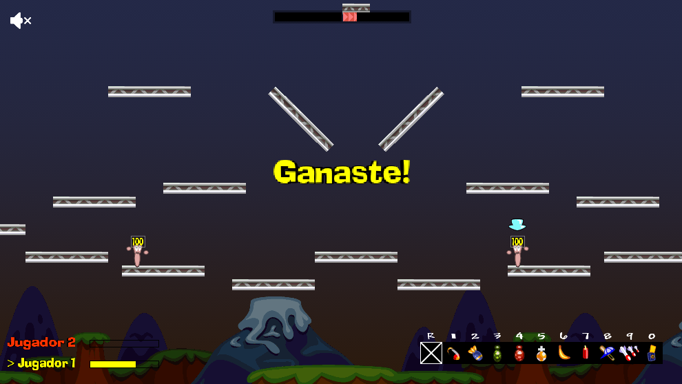

Este proyecto lo realizamos en 7 semanas para la materia "Taller de Programación". El objetivo era recrear
el juego clásico "Worms" el cual es un juego multijugador con interfaz gráfica. Al ser un proyecto tan grande
y con una duración corta, se nos recomendó dividir el proyecto en 3 partes para que cada integrante del grupo pueda
concentrarse en una sección en específico y lograr implementarlo por completo.
Fue un proyecto super interesante en el cual aprendimos a utilizar muchas herramientas y también mejoramos nuestro
conocimiento de otras, además de obtener experiencia trabajando en proyectos grandes sin instrucciones sobre cómo implementarlo.
El proyecto al inicio se dividió en parte gráfica/ cliente, server/ juego y protocolo y concurrencia, siendo esta
última la sección que decidí implementar.
El protocolo tenía 2 dificultades. La primera era que debía tener un formato claro que no solo me simplifique el uso, sino que
también debía contemplar que si en un futuro alguna persona quisiera continuar con el proyecto debería ser capaz de
entender el protocolo sin necesitar de mi presencia. Por esta razón, la modularización y creación de métodos que
agilicen el envío y obtención de mensajes era crucial. La otra dificultad era testearlo antes de unirlo a las otras
secciones del proyecto, ya que al utilizar sockets el testeo no es sencillo y el no testearlo implicaba un problema
para mis compañeros, ya que no podían saber si el error era suyo o del protocolo. Por suerte esas dificultades
pudieron superarse y todas las semanas podía agregar los métodos que el resto del equipo necesitaba.
Luego para concurrencia me centré en asegurarme que el server no pierda memoria, es decir, unir todos los hilos en el momento
correcto y liberar memoria que se haya pedido.
Ambas tareas (protocolo y concurrencia) eran chicas en comparación con el trabajo de mis compañeros, por lo que empecé
a ayudar en otras áreas/ tareas y para cuando terminé el proyecto había implementado el menú inicial (creado con QT)
para crear/ unirse a partidas, la configuración con yaml de armas y cliente, daño por caída (y generalización de recibir
daño, más el impulso que recibe el gusano herido), parábola de los proyectiles (con su variación en base a la potencia
y además cómo se enviaba el ángulo para graficarlos correctamente), implementación de fragmentos y cambio de características de
los proyectiles en base al tipo de arma.
Primero se debe iniciar el server, luego cada cliente va a poder unirse al server e iniciar el menú principal. Después de que
el cliente (ahora jugador) se haya unido o creado una partida se pasa a la pantalla principal donde se renderiza todo
el juego. En este momento se mostrará una pantalla diciendo el id de partida para que otros clientes sepan a que partida
unirse y se esperará a que se llegue a la cantidad mínima de jugadores para poder iniciar la partida. Una vez que está
la cantidad mínima de jugadores, al anfitrión se le dará la posibilidad de iniciar la partida apretando la tecla "C".
Una vez iniciada la partida, se asignan los gusanos disponibles en el mapa aleatoriamente de forma pareja. En caso de
que algún/ algunos jugadores tengan menos gusanos que otros se les da un boost de vida para compensar por la falta
de gusanos. Luego, el juego se ejecuta por turnos, en el cual el jugador de turno tiene un gusano (este cambia
cada vez que le toca al jugador a menos de que le quede un solo gusano). Durante el turno puede moverse por el mapa,
equiparse armas, recoger cajas de provisiones (que caen aleatoriamente cada cierta cantidad de tiempo) y utilizar un arma.
Cada arma tiene características diferentes, algunas tienen potencia y/o ángulo variable, a otras se les dice dónde es el
objetivo clickeando el lugar a atacar/ teletransportarse. Una vez que el gusano ataca, se le dan 3 segundos para moverse
y luego se cambia de turno. Si el gusano de turno recibe daño (se cae) o se le termina el tiempo, se pasa de turno.
Un detalle importante es que entre turnos se espera a que todos los proyectiles exploten y todos los gusanos estén quietos
o muertos/ ahogados ya que se quiere que todos los jugadores tengan un panorama claro de cómo está la partida antes del siguiente turno.
En caso de que un jugador no tenga más gusanos podrá seguir viendo la partida y cuando solo queden gusanos de 1 jugador la partida se
termina y se le muestra una pantalla de victoria o derrota a cada jugador. Luego de un
par de segundos se cierra la partida y se termina el juego.
Durante la partida se pueden usar "cheats", los cuales implementamos pensando en el testeo del juego y en la diversión
de los jugadores.
El proyecto se realizó en C++ usando librerías para graficar, aplicar la física y testear.
Para el testeo se uso catch2 por recomendación de los docentes de la materia. Para la parte gráfica se utilizó
QT para el menú inicial y SDL para el game loop. Luego, para el manejo de físicas se usó box2d. Además es un
proyecto que es multi-thread por la naturaleza de un servidor para un juego donde se espera poder tener más de
una partida al mismo tiempo y la comunicación entre server y cliente se realiza a través de sockets.
Como es un programa que tiene recursos compartidos entre threads, creamos monitores para asegurar que no existan
race conditions (con uso de un mutex).
Una partida común se vería de la siguiente forma.
1. Se inicia el menú.
2. Se elije un mapa entre los posibles.
3. Se espera a los demás jugadores.
4. Se puede iniciar la partida.
5. Se juega la partida.
6. Se termina y te avisa que ganaste!
El proyecto se encuentra con el manual de usuario para saber los controles y cosas que se pueden hacer y un instalador para facilitar el uso del juego en el siguiente repositorio: Ir al código.